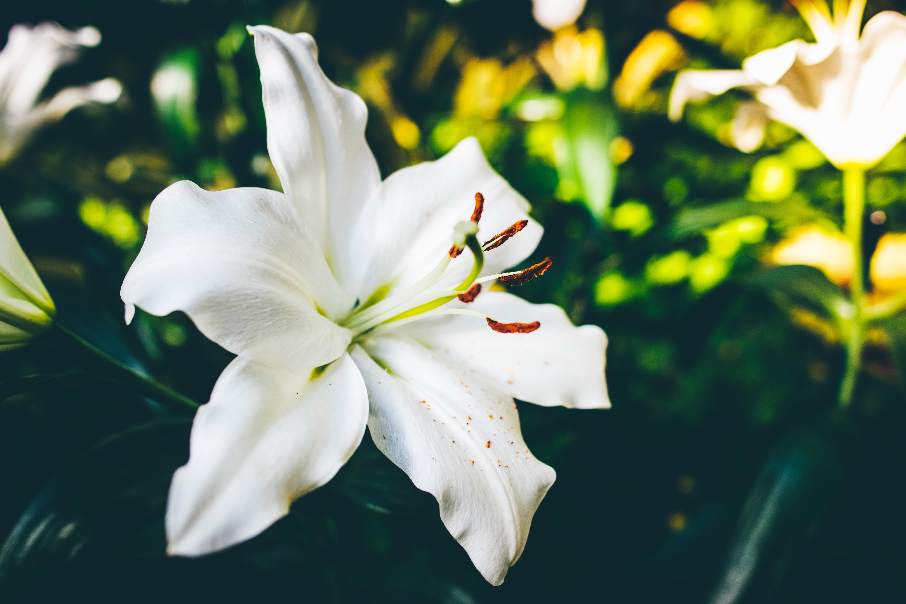

Lets look at some types of lilies and its pictures below..
Lilies are one of the best-known ornamental plants. In this article, we list some of the most popular lily species as well as which lilies are hardy.
- Asiatic hybrids: Asiatic lilies and their hybrids can be star-shaped and upward facing, star-shaped and outward facing or downward facing with petals that curve backwards. The double-petaled varieties are truly stunning and a wonderful alternative for those of us with pollen allergies. These hybrids are typically easy to care for, and their main flowering time is July.
- Tiger lily: This Asian lily species is hardy and undemanding in regard to location. Tiger lily plants rarely grow higher than a metre. They thrive in full sun, partial shade and even full shade. These lilies typically flower from June to August and are best known for their brightly-coloured and highly-speckled flowers.
- Turk’s cap lily: Turk’s cap lilies, also called martagon lilies, have small flowers that hang downwards and are known for their curled back petals that are reminiscent of a turban. The plants grow up to 2m tall and bloom from June to August. Their lovely scent envelopes the whole garden especially in the evening hours. Turk’s cap lilies are a lovely addition to rock gardens.
